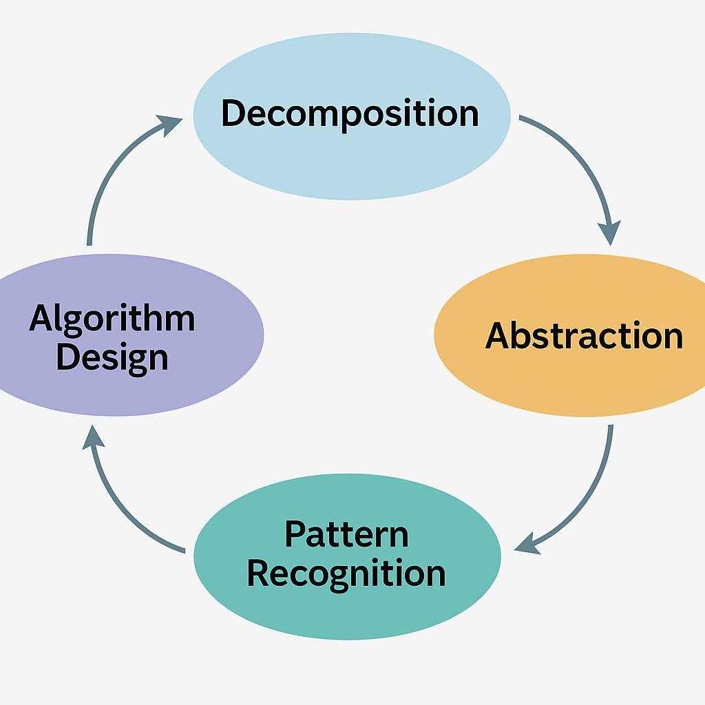

Introduction
Urban planning is evolving rapidly with the integration of advanced digital tools. Today’s urban planners are not only tasked with shaping the physical fabric of cities but also with ensuring that development is equitable and inclusive(American Planning Association, 2019).At the heart of this transformation is the increasing reliance on AI systems to support decision-making processes. While these systems offer remarkable analytical capabilities, they also introduce ethical challenges that must be addressed.
One pressing concern is the bias inherent in datasets used by AI decision support systems. When such systems prioritize economic efficiency, they may inadvertently favor affluent neighborhoods and neglect underprivileged areas that require investment(DO algorithms need to be regulated, and if so, what algorithms? — Vrije Universiteit Amsterdam 2023). This website explores an ethical dilemma where an AI tool, designed to help identify optimal locations for public facilities, recommends developments primarily in wealthy regions, forcing urban planners to confront the balance between economic returns and social justice.
The Role of AI in Urban Planning
AI is transforming urban planning by analyzing vast datasets—from demographic trends and economic performance to historical land-use patterns and infrastructural conditions. These systems provide insights that can enhance resource allocation, predict urban growth, and identify areas that might benefit from new public facilities such as schools, hospitals, and parks.
For urban planners, the promise of AI lies in its ability to process complex, multidimensional data rapidly, offering a degree of precision that is difficult to achieve manually. However, while AI systems excel at identifying patterns and forecasting outcomes, they are heavily dependent on the quality of the data they receive. If past data reflects historical inequities—such as underinvestment in less affluent neighborhoods—then the AI’s outputs may reinforce those same inequalities.

The Ethical Dilemma: Economic Efficiency vs. Social Equity
Imagine a scenario where a metropolitan government deploys an AI-driven decision support system programmed to analyze multiple data points, including economic performance, infrastructure quality, and demographic indicators. Based on its analysis, the AI recommends that new public facilities be built in affluent neighborhoods that promise high economic returns through increased tax revenues and business growth.
However, this recommendation raises several ethical concerns:
- Equity and Social Justice: The focus on economically promising areas may neglect underprivileged neighborhoods that desperately need public services, widening the urban divide(American Planning Association, 2019).
- Bias in Historical Data: Historical underinvestment in certain areas skews the AI’s recommendations, perpetuating a cycle where past inequities shape future investments.
- Decision Accountability: Urban planners have the responsibility to serve the public interest. Relying solely on AI outputs risks losing professional judgment, raising questions of accountability and ethical obligation.
Applying Computational Thinking
To tackle this complex dilemma, urban planners can employ computational thinking principles:
1. Decomposition
Break down the problem into key components: analyze the data sources, understand the algorithm’s decision criteria, and evaluate current urban inequities. This helps isolate factors that contribute to the biased recommendation.
2. Pattern Recognition
Identify systemic patterns in urban development and historical investment trends that suggest inherent biases. Comparing AI outputs with past planning decisions can reveal inconsistencies and areas where AI might be reinforcing outdated practices.
3. Abstraction
Focus on the central conflict by stripping away noncritical details. Abstract the issue to its core: the challenge of balancing economic efficiency with social equity, and determine which factors require adjustment in the AI’s logic.
4. Algorithmic Thinking
Propose modifications to the AI system. For example, integrate fairness algorithms and human oversight measures to ensure that recommendations also consider a baseline of equitable public service distribution.

Proposed Strategies and Solutions
To address these ethical challenges, the following strategies are proposed:
- Integrate Fairness Algorithms: Modify the AI system by incorporating constraints that guarantee minimum investment levels in underfunded areas.
- Hybrid Decision-Making Model: Establish a review process where urban planning experts adjust AI recommendations based on local insights and ethical considerations.
- Regular Audits: Schedule periodic audits of the AI’s performance to ensure data inputs are up-to-date and reflect current social realities rather than historical biases.
- Community Engagement: Involve local stakeholders in urban planning through public consultations and participatory sessions, ensuring that recommendations address community needs.
- Policy and Oversight: Develop robust policies that enforce equitable urban development standards and establish oversight committees to monitor AI-driven decisions.
Conclusion
Embracing AI has tremendous potential to transform urban planning. However, careful oversight is essential to prevent advanced systems from perpetuating longstanding inequities. Through computational thinking and a hybrid decision-making approach, urban planners can critically evaluate AI outputs and integrate ethical considerations into their practice. By ensuring transparency, regular system audits, and active community participation, we can utilize AI as a powerful tool in creating urban environments that are both efficient and equitable.
References
-
American Planning Association. (2019).
Planning for equity in urban development. APA Publications.
Link to PDF
-
DO algorithms need to be regulated, and if so, what algorithms? — Vrije Universiteit Amsterdam. (2023). APA Publications.
Link to source